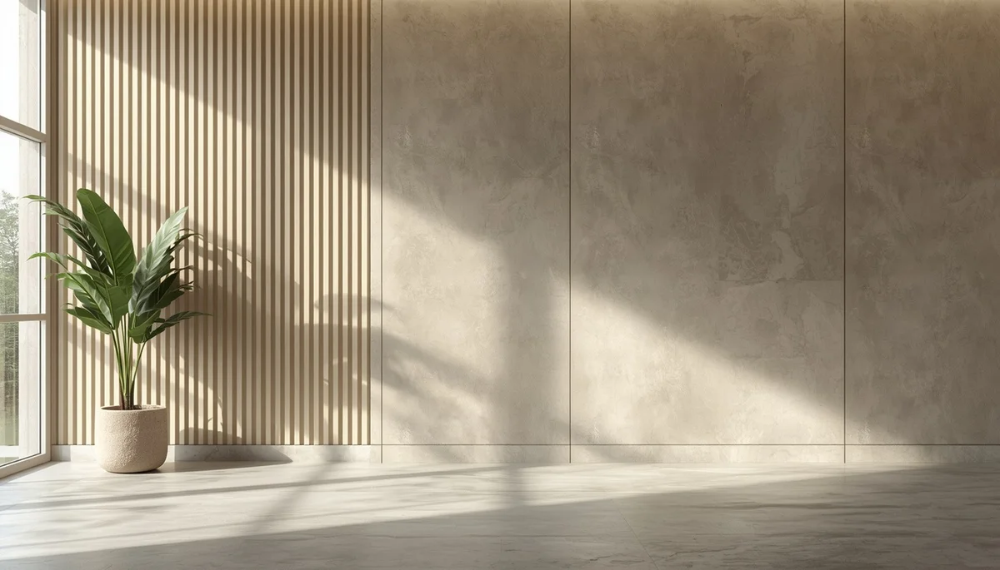

¿Qué es la escoliosis idiopática?
La escoliosis idiopática es una alteración tridimensional de la columna vertebral que implica tanto la inclinación lateral de las vértebras como su rotación sobre su propio eje. El término "idiopática" indica que su causa exacta sigue siendo desconocida, aunque se sabe que guarda una relación estrecha con los periodos de crecimiento acelerado durante la infancia y la adolescencia.
Desmitificar la condición con información rigurosa
Recibir un diagnóstico o escuchar hablar sobre escoliosis suele generar inquietud en las familias. Sin embargo, en la inmensa mayoría de los casos detectados en la etapa escolar se trata de curvas leves que no limitan la vida cotidiana y que, con una supervisión médica adecuada y pautas físicas oportunas, evolucionan de forma totalmente controlada.
Comprender la geometría de la columna
Mientras que una columna recta vista desde atrás es lo habitual, la escoliosis dibuja una ligera forma de "S" o "C". Entender esta desviación sin alarmismos nos ayuda a enfocar el acompañamiento desde la tranquilidad, el cuidado preventivo y la confianza en los profesionales de la salud.
"Comprender la naturaleza de la escoliosis permite transformar el miedo inicial en un cuidado sereno, informado y constante."
Acompañar el desarrollo con perspectiva y calma
Conocer los fundamentos de esta condición otorga a las familias las bases necesarias para colaborar activamente con el equipo médico sin sobreproteger al menor.
➔ Volver al índice de Escoliosis Idiopática